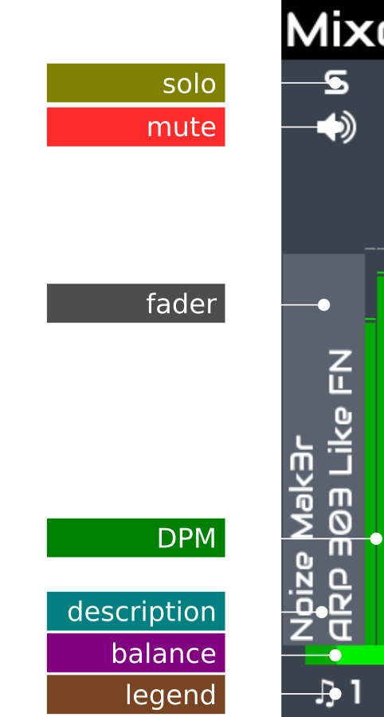

chain volume
chain solo
---
chain balance
chain mute
---
main volume
midi learn
---
select chain
chain control
chain options
Audio Mixer
The audio mixer is the zynthian UI's "home" view. You can always access
the mixer by pushing the MIX button.
It's composed of vertical strips associated with chains. Initially it will be empty, showing the main strip alone.
For each chain you create, a new strip is added to the mixer. There can be more mixer strips than can be displayed.
They will scroll left / right if you select a strip that is off screen.
Each strip is an interactive widget that can be manipulated in several ways and it shows status info about the
associated chain.
From top to bottom:

- Solo: Solo flag. Push to toggle. This is a non-exclusive solo mode. When a chain has solo enabled, all
other chains without solo enabled will be muted, allowing auditioning of one or more chains. The main solo
will disable all chain solos.
- Mute: Mute flag. Push to toggle. When a chain is muted ("mute" enabled), it will remain silent.
- Fader: Mixing volume for the associated chain. Rotate knob #1 or drag up & down to modify the fader level.
On the touchscreen you can drag multiple faders at once. Tap it to set the active chain.
- DPM: Digital Peak Meter for the associated chain, covering the range from -50dBFS to 0dBFS.
- Description: A vertically oriented text describing the chain. By default, for a synth chain it will show
synth processor and preset name. If you give a name to the chain, this will be included in the description too.
- Balance/Pan: Mixing right/left balance (or pan of a mono signal) for the associated chain. Rotate knob#2
or drag left & right on the fader to modify.
- Legend: It shows an icon for the chain's type and a number for the assigned MIDI channel. Tap it to access
the chain's control view.